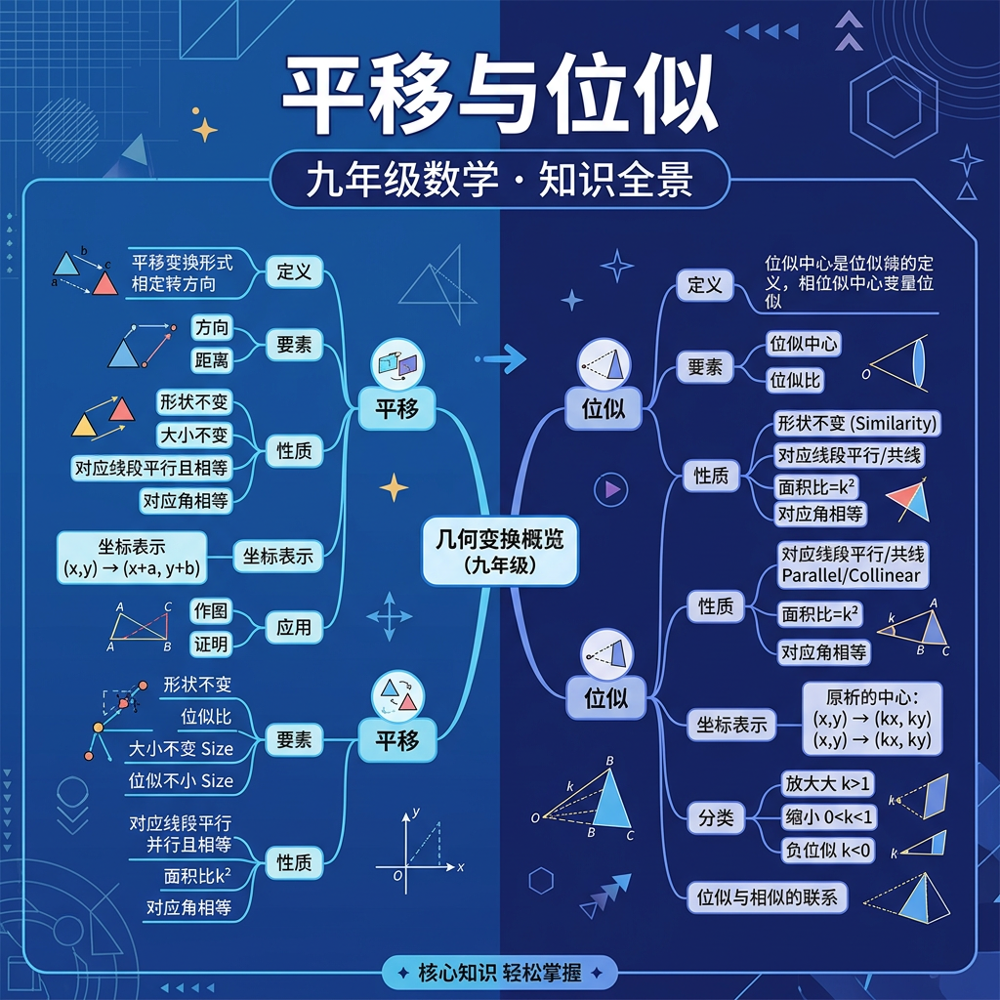

1. 将点A(2, 3)向右平移4个单位，再向下平移1个单位，得到的点坐标是？
2. 下列说法正确的是？
3. 已知△ABC与△A'B'C'相似，相似比为1:3，若△ABC面积为4，则△A'B'C'面积为？
地图导航中，你把手机地图拖动了一下——And（而且）地图上所有的标记都跟着移动了同样的距离和方向；But（但是）你发现城市之间的相对位置没有变；Therefore（因此）这就是数学中的"平移"：整体移动，形状不变！
将三角形三个顶点A(1,2)、B(3,2)、C(2,4)同时向左平移3，向上平移2，B点新坐标是？
你用手机相机对焦时，画面中的物体被放大——And你发现放大后图形与原图形形状完全相同；But大小按比例变化，且所有对应点连线都交于一点（镜头中心）；Therefore这就是位似变换：从"位似中心"出发，按同一比例缩放所有点！
以原点O为位似中心，位似比k=3，将点P(2, -1)变换后得到P'，P'坐标为？
位似比k=2时，原图形面积S=5，位似后图形面积S'=？
| 特征 | 平移 | 位似 |
|---|---|---|
| 大小 | 不变（全等） | 按比例缩放 |
| 形状 | 不变 | 不变（相似） |
| 方向 | 不变 | k>0同向，k<0反向 |
| 面积比 | 1:1 | 1:k² |
判断：以原点为位似中心，位似比k=-2，变换后图形在原图形的对面（关于原点对称一侧）。
某城市规划图上，学校S的坐标为(4, 6)，公园P为(8, 2)，图书馆L为(6, 10)。
1. 点P(-3, 4)向右平移5个单位，向下平移6个单位，得P'的坐标为？
2. 以A(1, 2)为位似中心，位似比k=3，将点B(3, 4)变换为B'，B'坐标为？
3. △ABC经位似变换（k=4）得△A'B'C'，若△ABC周长为6，则△A'B'C'周长为？
4. 位似比k=-1的位似变换等价于哪种变换？
位似变换的迭代应用——谢尔宾斯基三角形、科赫雪花的数学原理
地图的缩放原理与坐标变换在地理信息系统中的应用
荷兰画家埃舍尔的无限镶嵌图案中的位似与变换
游戏和动画中的仿射变换：平移+缩放+旋转的矩阵表示